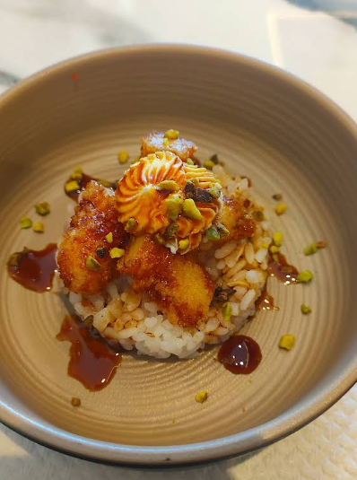

Materia prima selezionata ogni giorno per garantirti il massimo della qualità.
Un ambiente curato nei minimi dettagli per le tue serate speciali.
Tutta la qualità che cerchi con una varietà di piatti per ogni palato.
Da UMI SUSHI, ogni piatto è un'opera d'arte. Dalle nostre selezioni di sashimi ai piatti fusion gourmet, l'esperienza visiva anticipa un'esplosione di sapori autentici.
"L'animo avvilito perde l'appetito": lasciati coccolare dalla nostra ospitalità.

"Il pesce è fresco, il riso ben condito e le porzioni giuste. Ho provato il sashimi e alcuni uramaki: davvero buoni. Prezzi onesti per la qualità."
- Mirko"All you can eat da provare! Vasta scelta anche per chi non ama il pesce. Prezzi accessibili, qualità ottima, assolutamente consigliato."
- Spartacus91"L'ambiente è carino e molto curato. Il personale è molto gentile ed il cibo offerto è buono. I ravioli alla piastra ed il sashimi sono da ordinare!"
- Fabio LeuzziSiamo aperti dal martedì alla domenica.